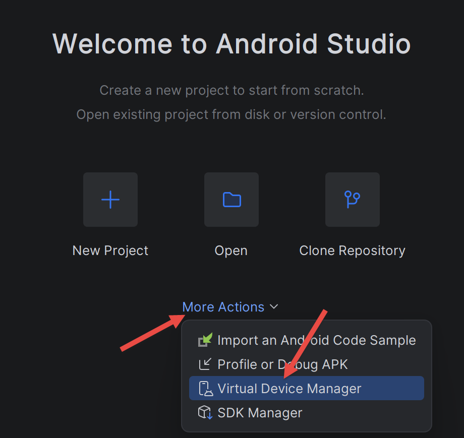
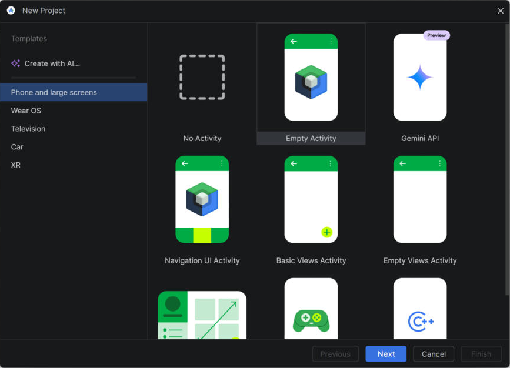
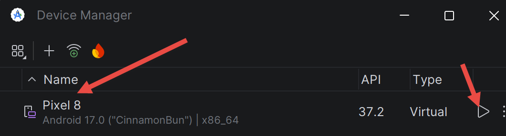

2. Kapitel 1 - Einrichtung der Arbeitsumgebung
2.1. Installation der Werkzeuge
- Node.js: Laden Sie Version 22 (oder höher) von nodejs.org herunter und installieren Sie sie. Überprüfen Sie die Installation in einem Terminal mit den Befehlen [node --version] und [npm --version]. Node.js wird nur für den [NestJS]-Server benötigt.
- [MySQL] 8: Es wird in Kapitel 2 mit dem Werkzeug Laragon installiert, das auch das Administrationswerkzeug HeidiSQL mitbringt.
- Postman: Kostenlos auf postman.com erhältlich; es wird in Kapitel 2 zum Testen des Servers verwendet.
- Visual Studio Code: optional, zum Ansehen des Codes des Servers [NestJS].
Für den Client wird nur ein Werkzeug benötigt: [Android Studio]. Ein separates JDK (Java Development Kit) muss nicht installiert werden: Android Studio bringt ein eigenes mit, die JetBrains Runtime ([JBR]), die zum Ausführen von [Gradle], dem Build-Werkzeug für Android-Projekte, verwendet wird. Auch der Kotlin-Compiler muss nicht installiert werden: Er ist ein Gradle-Plugin, das beim ersten Build des Projekts automatisch heruntergeladen wird.
2.1.1. Android Studio und das Android-SDK
[Android Studio] kann kostenlos unter [https://developer.android.com/studio] heruntergeladen werden. Beim ersten Start bietet der Assistent eine Standardinstallation an: Akzeptieren Sie diese. Anschließend lädt er das Android-SDK herunter (die Plattformbibliotheken, Kompilierungswerkzeuge und den Emulator).

Dieses Dokument wurde mit Android Studio Quail 4 (2026.1.4) getestet. Der Startbildschirm bietet über den Link [More Actions] Zugriff auf den [SDK Manager] und den [Virtual Device Manager], die später verwendet werden:

- Der [SDK Manager] installiert und aktualisiert die Komponenten des Android-SDK. Registerkarte [SDK Platforms]: Prüfen Sie, ob eine aktuelle Android-Plattform installiert ist – das Projekt in diesem Dokument wird für API 37 (Android 17) kompiliert. Fehlt sie, lädt Gradle sie beim ersten Build automatisch herunter;
- Registerkarte [SDK Tools]: Prüfen Sie, ob [Android SDK Build-Tools], [Android SDK Platform-Tools] (das das Werkzeug [adb] enthält) und [Android Emulator] angehakt sind.

Das SDK wird standardmäßig im Ordner [%LOCALAPPDATA%\Android\Sdk] installiert (unter Windows). Zwei seiner Unterordner enthalten Befehlszeilenwerkzeuge, die in diesem Dokument verwendet werden: [platform-tools] (das Werkzeug [adb], das ein Smartphone oder einen Emulator vom Computer aus steuert) und [emulator]. Sie können diese beiden Ordner zum [PATH] des Systems hinzufügen, damit Sie in einem Terminal einfach [adb] eingeben können.
2.2. Ein Android-Projekt mit Android Studio erstellen
Der Client-Code liegt diesem Dokument bei (Ordner [rdvmedecins-kotlin-client]). Er wurde aus der Projektvorlage [Empty Activity] von Android Studio erstellt und anschließend erweitert. Sehen wir uns zunächst an, wie dieses Startprojekt erstellt wird: Es entspricht dem Befehl [flutter create] aus dem Flutter-Kurs. Klicken Sie auf dem Startbildschirm von Android Studio auf [New Project]:

- Wählen Sie in der Kategorie [Phone and large screens] die Vorlage [Empty Activity]. Dies ist die „Jetpack Compose“-Vorlage: eine App mit einem einzigen Bildschirm, deren Oberfläche in Kotlin definiert ist. Die Vorlage [Empty Views Activity] verwendet dagegen das ältere, in XML beschriebene View-System, das in diesem Dokument nicht verwendet wird;
- Klicken Sie auf [Next].

- [Name]: der Name der Anwendung, der unter ihrem Symbol auf dem Smartphone angezeigt wird. Für dieses Dokument: [RdvMedecins];
- [Package name]: die eindeutige Kennung der Anwendung in Form eines umgekehrten Domänennamens. Für dieses Dokument: [fr.rdvmedecins.client]. Dies ist zugleich das Kotlin-Basispaket für den Quellcode;
- [Save location]: der Projektordner;
- [Minimum SDK]: die älteste unterstützte Android-Version. Der Client in diesem Dokument erfordert API 26 (Android 8.0), was nahezu alle im Gebrauch befindlichen Smartphones abdeckt;
- [Build configuration language]: die Sprache der Gradle-Konfigurationsdateien. [Kotlin DSL (build.gradle.kts)] ist die empfohlene Wahl: Die Build-Konfiguration wird ebenfalls in Kotlin geschrieben;
- [Finish] erstellt das Projekt. Android Studio startet dann eine erste „Gradle-Synchronisierung“: Dabei werden Gradle selbst, das Android-Plugin, der Kotlin-Compiler und die vom Projekt deklarierten Bibliotheken heruntergeladen. Das kann beim ersten Mal mehrere Minuten dauern.
Das erstellte Projekt hat die folgende Verzeichnisstruktur (die Dateien, die der Leser dieses Dokuments geändert oder hinzugefügt hat, werden in Kapitel 4 behandelt):
[Gradle] spielt hier dieselbe Rolle, die [npm] für ein Node.js-Projekt oder [flutter]/[pub] für das Flutter-Projekt spielte: Es lädt die Abhängigkeiten herunter, kompiliert den Code und erzeugt die installierbare Anwendung, eine .apk-Datei. Die Skripte [gradlew] (Linux, macOS) und [gradlew.bat] (Windows), der Gradle-„Wrapper“, laden bei Bedarf genau die vom Projekt benötigte Gradle-Version herunter (festgelegt in [gradle/wrapper/gradle-wrapper.properties]): Eine globale Installation von Gradle ist nicht erforderlich.
2.3. Das Client-Projekt öffnen
Wenn Sie den Code zu diesem Dokument heruntergeladen haben, befindet sich der Client im Ordner [rdvmedecins-kotlin-client]. Um ihn zu öffnen, klicken Sie auf dem Startbildschirm von Android Studio auf die Schaltfläche [Open] und wählen dann diesen Ordner aus (den Ordner, der die Datei [settings.gradle.kts] enthält). Android Studio startet dann die oben beschriebene Gradle-Synchronisierung. Anschließend erscheint das Projekt in der Ansicht [Project] (links); die Ansicht [Android], die Standardansicht, gruppiert die Dateien nach Typ (Manifeste, Kotlin+Java, Assets, Ressourcen) und nicht nach Ordnern.
Das Projekt lässt sich auch ohne Android Studio über die Befehlszeile erstellen. In einem Terminal, das im Ordner [rdvmedecins-kotlin-client] geöffnet ist:
- Die erste Zeile (PowerShell) teilt Gradle mit, welches JDK verwendet werden soll: das von Android Studio. Dies ist überflüssig, wenn die Variable [JAVA_HOME] auf dem Rechner bereits definiert ist;
- Die zweite Zeile führt die Gradle-Aufgabe [assembleDebug] aus, die das Projekt kompiliert und eine „Debug“-App erzeugt, die auf einem Emulator oder Smartphone installiert werden kann.
Beim ersten Build lädt Gradle alles herunter, was es benötigt, und zeigt dann die Liste der Aufgaben an, die es ausführt:
- [compileDebugKotlin]: Kompilierung des Kotlin-Codes in Java-Bytecode;
- [dexBuilderDebug]: Umwandlung dieses Bytecodes in das DEX-Format, das von der virtuellen Android-Maschine ausgeführt wird ([ART], Android Runtime);
- [packageDebug]: Zusammenstellung der Datei [app/build/outputs/apk/debug/app-debug.apk], der installierbaren Anwendung.
2.4. Einen Android-Emulator einrichten
Wenn Sie kein Smartphone haben, können Sie die App auf einem Android-Emulator testen: einem virtuellen Smartphone, das in einem Fenster auf Ihrem Computer läuft. Dieser Abschnitt entspricht dem aus dem Flutter-Kurs.
[Prerequisites]: Die Virtualisierung muss im [BIOS] des Computers aktiviert sein, und unter Windows muss das Feature [Windows Hypervisor Platform] angehakt sein ([Control Panel / Programs / Turn Windows features on or off]), was einen Neustart erfordert. Andernfalls startet der Emulator nicht oder läuft sehr langsam.
Öffnen Sie den [Device Manager] in Android Studio: [More Actions / Virtual Device Manager] auf dem Startbildschirm oder [Tools / Device Manager], wenn ein Projekt geöffnet ist.

Klicken Sie auf [Create Device], wählen Sie eine Vorlage (zum Beispiel [Pixel 8]) und dann [Next]. Wählen Sie ein aktuelles Android-Systemabbild für den Prozessor [x86_64] und laden Sie es über den Link [Download] daneben herunter; anschließend [Next] und [Finish].


Starten Sie den Emulator über die Schaltfläche [Play] im [Device Manager]:

Sie können ihn auch von einem Terminal aus starten. Der erste Befehl listet die erstellten Emulatoren auf, der zweite startet einen davon:
Warten Sie, bis der Android-Startbildschirm im Emulatorfenster erscheint (der erste Start kann mehrere Minuten dauern), und überprüfen Sie dann, ob das Werkzeug [adb] ihn erkennt:
[Note]: Wenn [adb devices] statt [device] den Status [offline] anzeigt, ist der Emulator noch nicht vollständig gestartet, oder [adb] befindet sich in einem inkonsistenten Zustand. Warten Sie auf den Begrüßungsbildschirm und starten Sie [adb] bei Bedarf mit den Befehlen [adb kill-server] und anschließend [adb start-server] neu. Besteht das Problem weiterhin, prüfen Sie mit [where.exe adb], dass im [PATH] kein anderes [adb] in einer anderen Version (zum Beispiel das eines früheren SDK) vorhanden ist.
2.4.1. Das Android-Smartphone vorbereiten
Damit die App auf einem echten Android-Smartphone ausgeführt werden kann, muss das Smartphone so eingestellt werden, dass es vom Computer aus gesteuert werden darf:
- Aktivieren Sie die Entwickleroptionen: Öffnen Sie [Settings / About phone] und tippen Sie mehrmals (in der Regel siebenmal) auf [Build number], bis das Smartphone anzeigt, dass Sie nun Entwickler sind. Die genauen Bezeichnungen variieren je nach Hersteller;
- Aktivieren Sie [USB debugging] im Menü [Developer options] (das im vorherigen Schritt hinzugefügt wurde);
- Verbinden Sie das Smartphone über ein USB-Kabel mit dem Computer, das Daten überträgt (nicht nur das Smartphone lädt), und bestätigen Sie auf dem Smartphone die Anfrage zur Autorisierung des USB-Debuggings. Wenn das Smartphone unter Windows nicht erkannt wird, installieren Sie den USB-Treiber des Herstellers („OEM USB drivers“, siehe [https://developer.android.com/studio/run/oem-usb]);
- Prüfen Sie, ob das Smartphone in der Liste erscheint, die von [adb devices] angezeigt wird.
Das Smartphone greift auf den [NestJS]-Server entweder über die IP-Adresse des Computers im lokalen Netzwerk oder über das USB-Kabel mit dem Befehl [adb reverse] zu: Diese Einstellungen werden in Kapitel 5 beschrieben.